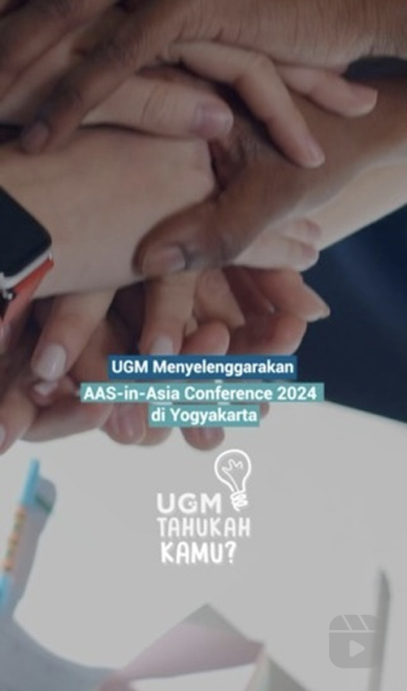
ugm.yogykarta
Kawan UGM, AAS-in-Asia Conference 2024 akan segera diselenggarakan di UGM pada 9-11 Juli mendatang lho! Akan ada 1.400 peserta dari 45 negara akan hadir menjadi bagian dari konferensi ini.
Lalu AAS-in-Asia Conference itu apa? Simak #TahukahKamu berikut ini ya! 🫶🏻
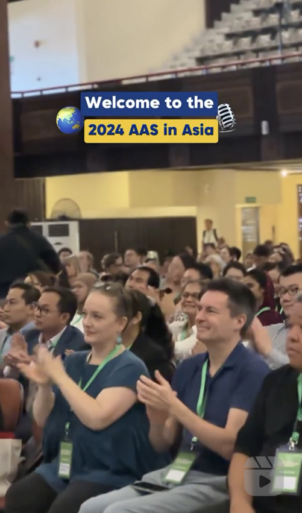
ugm.yogyakarta
AAS in Asia 2024 resmi dibuka, Selasa (9/7) di GSP UGM. Lebih dari 1.500 peserta dari 43 negara hadir dan mengikuti konferensi ini. Mau tahu antusiasme penyelenggara dan peserta? Yuk tonton sampai habis kesan mereka😍
#AAS2024 #AASinAsia
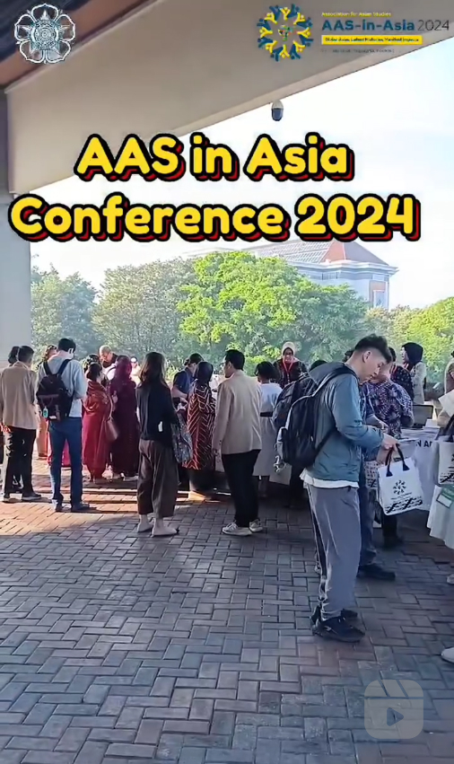
penelitian.ugm
*AAS-in-Asia Conference 2024*
The AAS-in-Asia in collaboration with Universitas Gadjah Mada (UGM) Yogyakarta, Indonesia, invites scholars from around the world to join the exciting conference “AAS-in-Asia Conference 2024” in Yogyakarta, Indonesia on 9-11 July 2024.
With the theme “Global Asias: Latent Histories, Manifest Impacts”, AAS-in-Asia 2024 welcomes scholars from all disciplines to delve into Global Asias. Whether your expertise lies in history, literature, religion, cinema, law, politics, economics, or any other field, this conference offers a platform to share insights and foster cross-disciplinary collaborations.
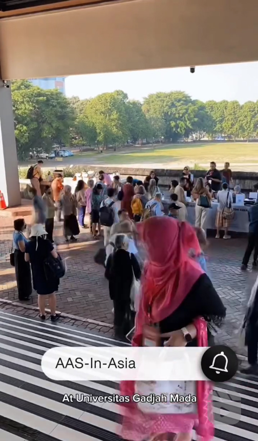
penelitian.ugm
*DAY 1 AAS-in-Asia Conference 2024*
The AAS-in-Asia in collaboration with Universitas Gadjah Mada (UGM) Yogyakarta, Indonesia, invites scholars from around the world to join the exciting conference “AAS-in-Asia Conference 2024” in Yogyakarta, Indonesia on 9-11 July 2024.
With the theme “Global Asias: Latent Histories, Manifest Impacts”, AAS-in-Asia 2024 welcomes scholars from all disciplines to delve into Global Asias. Whether your expertise lies in history, literature, religion, cinema, law, politics, economics, or any other field, this conference offers a platform to share insights and foster cross-disciplinary collaborations.
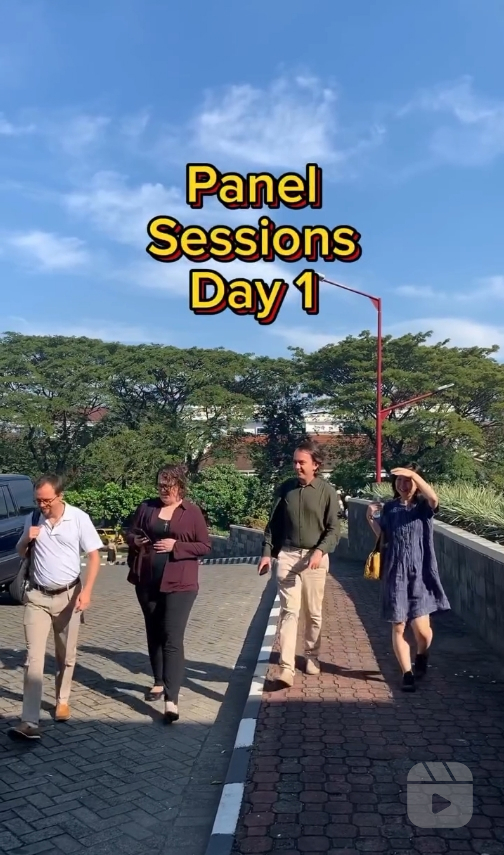
kbm.ugm and penelitian.ugm
Do you know that KBM has the opportunity to participate in the AAS UGM conference in Yogyakarta? We want to share what we gained from the world's largest Asian Studies conference. Let's see what topics KBM's team has covered on the first day!
Contributor: @asminurais 📸
#AASinAsia2024 #AASUGM #AAS2024
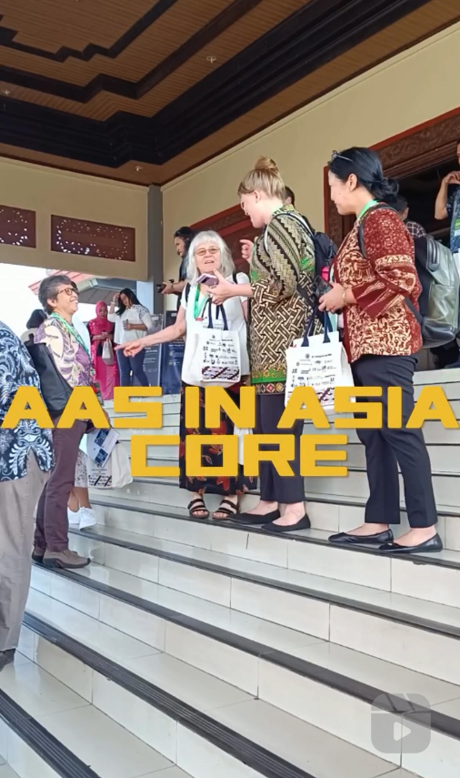
kbm.ugm and penelitian.ugm
The AAS UGM conference in Yogyakarta was very lively. Let's take a look back at the atmosphere on the first day!
Contributor: @yanuaritakusuma 📸
#AASinAsia2024 #AASUGM #AAS2024
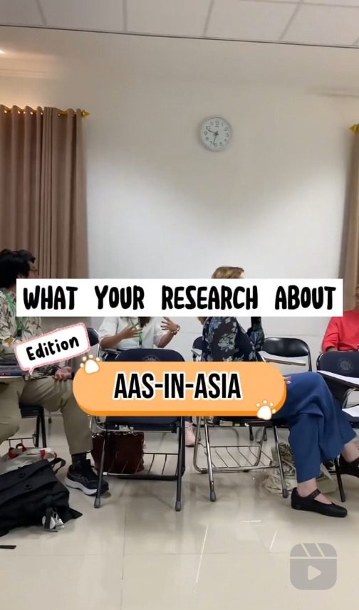
kbm.ugm
At the AAS UGM Conference in Yogyakarta, many researchers from various countries attended. There must be a lot of new things we can learn. Let's find out what topics they presented on the second day!
Contributor: @lailliarianiy 📸✨
#AASinAsia2024 #AASUGM #AAS2024
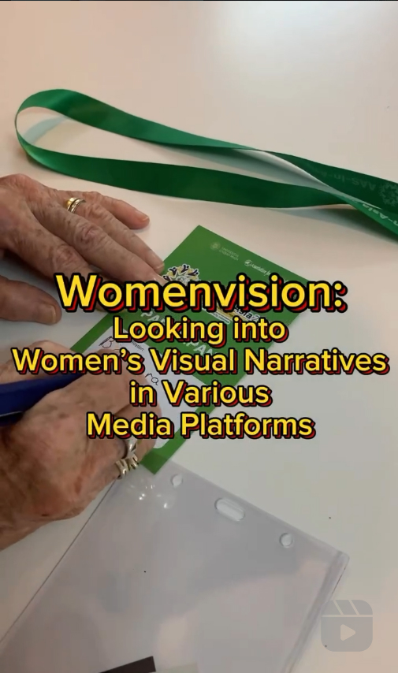
kbm.ugm
The various topics presented at the AAS UGM Yogyakarta were very interesting! But wait, we had some conversations with female researchers who problematized the narrative of women's visual representation in various media. Curious? Let's find out more!
Our lovely contributor: @asminurais 🌻📝
#AASinAsia2024 #AASUGM #AAS2024
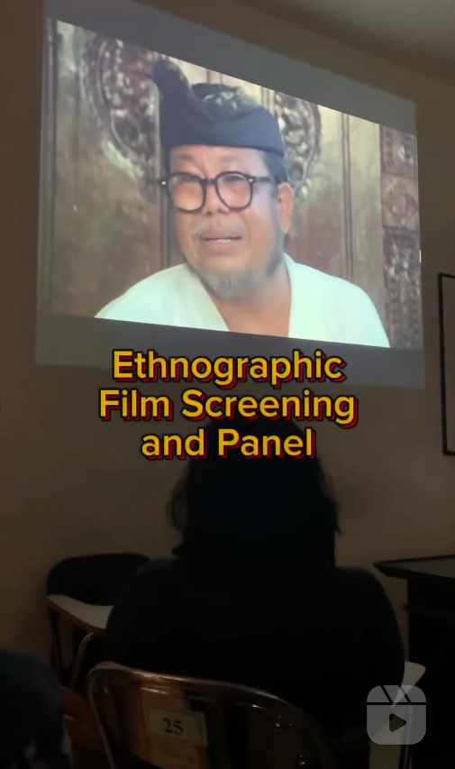
kbm.ugm and penelitian.ugm
Love AAS UGM! But what if "I am more into film production or film studies"? Don't worry. We also have some film screening and discussion agendas. For example, an ethnographic film screening that scheduled for the second day. Let's watch it together!
The elegant contributor: @asminurais 💻🌹
#AASinAsia2024 #AASUGM #AAS2024
kbm.ugm and penelitian.ugm
We also have a film screening and discussion of "Pioneering Voices: Women and Writers of Asia Heritage" with filmmaker Professor Louisa Wei and CathayPlay! Are you curious about the audience's experience after watching "Golden Gates Girl" and attending this event? Join me in chatting with the audience!
The Cute Contributor: @lailliarianiy 🌻📝
#AASinAsia2024 #AASUGM #AAS2024
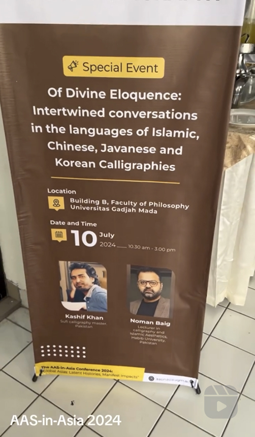
wulanastuti and penelitian.ugm
A glance of a wonderful workshop on Arabic Calligraphy, a side event of AAS-in-Asia 2024
Of Divine Eloquence: Intertwined conversations in the languages of Islamic, Chinese, Javanese and Korean Calligraphies
Featuring Mr. Kashif Khan, Sufi calligraphy master from Pakistan and Mr. Noman Baig, Associate Professor in Social Development and Policy, Lecturer in calligraphy and Islamic Aesthetics, Habib University, Karachi, Pakistan
Universitas Gadjah Mada, July 10, 2024 at the Faculty of Philosophy.
#aasinasia2024 #arabiccalligraphy #internationalconference
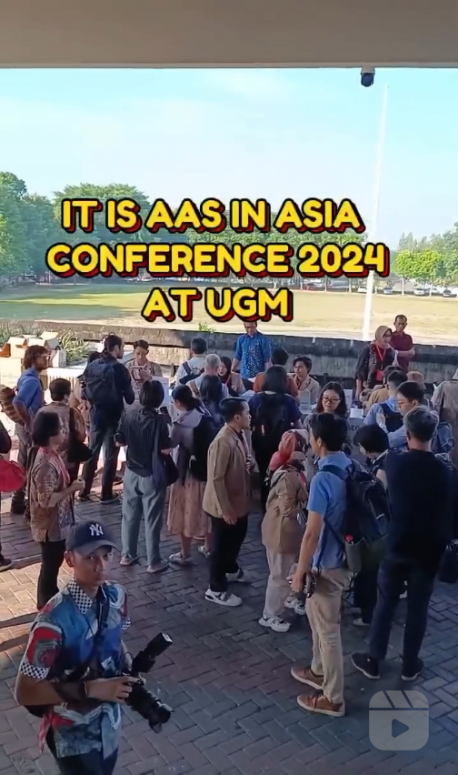
kbm.ugm and penelitian.ugm
Good morning!!! I'm back! 😆🌻
The AAS UGM conference in Yogyakarta is HUGE! All the activities seem fascinating, and the participants appear to be enjoying themselves immensely. However, to enjoy such a grand and warm event, we have a hardworking team behind the scenes who have been preparing AAS in UGM Yogyakarta since 2023!
We are deeply grateful to have such a fantastic team.
Please join me in peeking for a moment at the busy schedule of the "the red lanyard" committee 🟥 ✨✨
Ps: please make sure you greet "the red lanyard" team, not "the red flag" one ☺️🚩
The fabulous contributor: @yanuaritakusuma 🌹
#AASinAsia2024 #AASUGM #AAS2024
kbm.ugm
The AAS in Asia Conference at UGM Yogyakarta also features round table discussions. Discussions on Asian Studies are always engaging and contextual as they involve multiple perspectives, various disciplines, crossing geographical boundaries, and connecting many diverse cultures.
On this occasion, let's take a look how academics, researchers, and filmmakers discuss Asian cinema under the topic of Trans-Asian Imagination! 🎥🎞️📽️
Contributor: @asminurais
#AASinAsia2024 #AASUGM #AAS2024
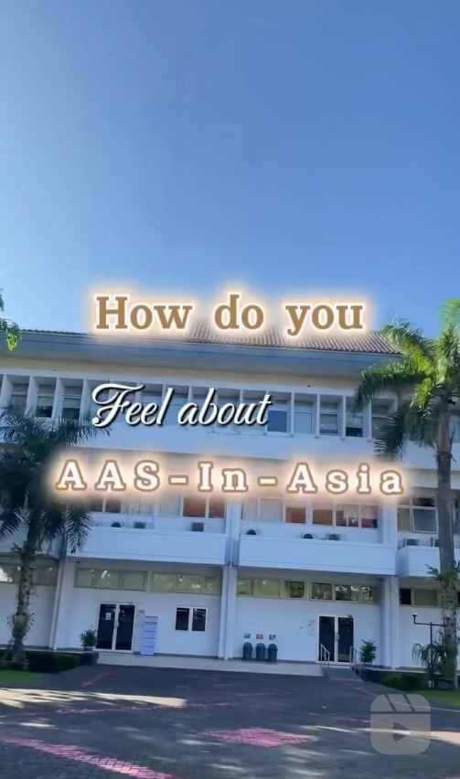
kbm.ugm and penelitian.ugm
This is the third day of the AAS in UGM Yogyakarta. The first and second days have passed.
What do the participants think about this conference?
How was their experience at UGM?
I am curious, let's find out together!🔎
Contributor: @lailliarianiy 🌻
#AASinAsia2024 #AASUGM #AAS2024
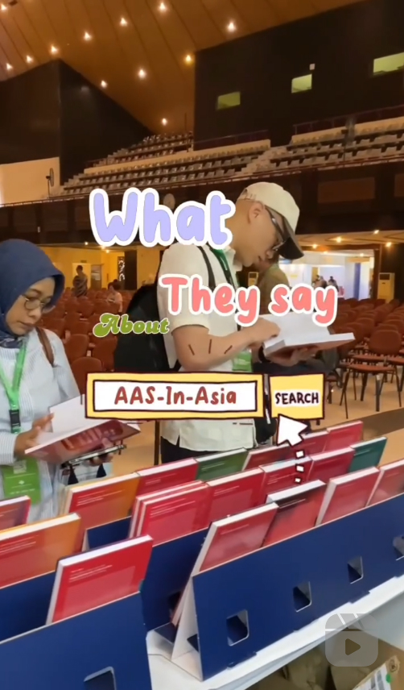
kbm.ugm and penelitian.ugm
We need more testimonials about AAS in UGM Yogyakarta!
Follow me to find more!
Contributor: @lailliarianiy 🌻
#AASinAsia2024 #AASUGM #AAS2024
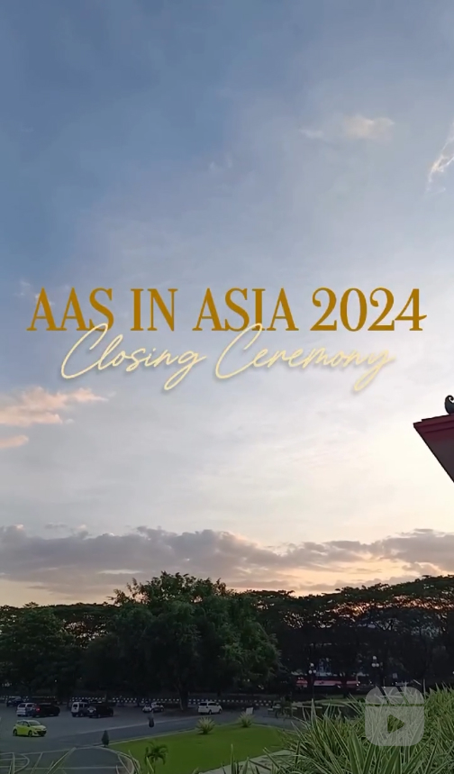
kbm.ugm and penelitian.ugm
AAS at UGM Yogyakarta was a delightful experience!
We engaged in discussions, constructed the critical yet warm academic atmosphere, celebrated multidisciplinary thinking, built networks, and opened the opportunities for future collaboration!
The third day of the conference has concluded and it's time to part ways.
Let's make this moment special!
AAS in UGM Yogyakarta is ISTIMEWA!!!
Contributor: @yanuaritakusuma 🌹
#AASinAsia2024 #AASUGM #AAS2024
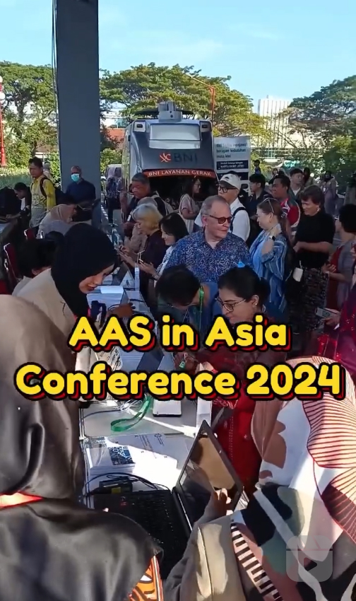
kbm.ugm
Throwback series: AAS at the UGM Yogyakarta 2024 at glance ✨
At the AAS conference in UGM Yogyakarta 2024, differences do not merely converge in harmony. Cultural, background, historical, and disciplinary differences come together in a critical, inclusive, yet warm discussion atmosphere. All of this is aimed at fostering better understanding and scholarly development that embraces those often marginalized in the practice of knowledge production. ✨🎞️🌻🔎
Cheerful contributor: @yanuaritakusuma 🌹
#AASinAsia2024 #AASUGM #AAS2024
kbm.ugm and cathayplayglobal
Did you know that AAS in UGM Yogyakarta also hosted film screenings and discussions? On July 10, 2024, we had the opportunity to screen, watch, and discuss the film with the filmmakers of "Golden Gates Girl," Professor S. Louisa Wei. We also had the chance to interview her exclusively!
Let's follow the AAS Film Screening team as they interviewed her.
Contributor: @asminurais 🌻
📷 AAS Film Screning Team
@lborneva @mkhmmdaziz
#AASinAsia2024 #AASUGM #AAS2024
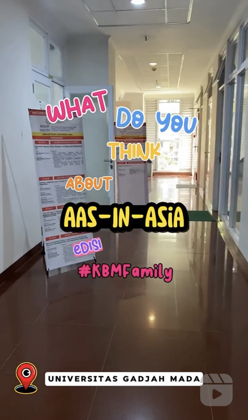
kbm.ugm
The AAS in Asia-UGM Yogyakarta 2024 conference has concluded, but the euphoria is still felt today. Let’s ask the opinions of the KBM family members, both students and KATABUMI (Alumni Association of Media and Cultural Studies) who participated in this event!
Let's go! 🚀
Contributor: @lailliarianiy 🌼
#AASINASIA2024 #AASUGM #AAS2024
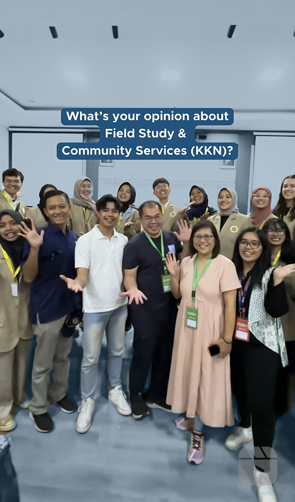
ugm.yogyakarta
Konferensi AAS-in Asia 2024 resmi berakhir 11 Juli lalu. Di hari terakhir, beberapa peserta berkesempatan mengunjungi salah satu lokasi KKN-PPM di Mlati, Sleman, Yogyakarta.
Ternyata, mereka sangat terkesan dengan program-program yang dikerjakan oleh para mahasiswa untuk membantu meminimalkan masalah-masalah yang ada di masyarakat, lho.
Yuk, ikuti keseruannya! 😉
#aasinasia2024 #kknppmugm2024
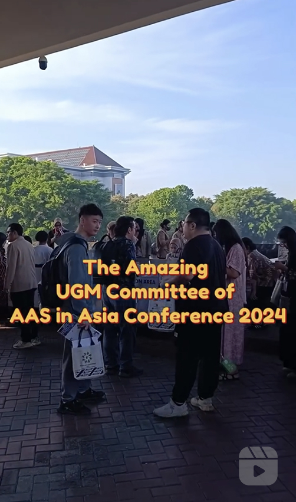
kbm.ugm
The AAS in Asia-UGM Yogyakarta 2024 was a grand and extraordinary event. During the event, we saw how the participants enjoyed it. However, without the incredible organizers commitee, this event would not have been possible.
This video is presented to you as a heartfelt thank you to the commitee members who meticulously prepared every detail of the conference which enabled us to exchange knowledge and enhance our experiences comfortably.
Let's take a look at the excitement of the team as they prepared all aspects of this event behind the scenes.
"The strenght of the team is each individual member. The strenght of the member is the team."
-Phil Jackson-
Thank You UGM Committee
Contributor: @yanuaritakusuma 🎞️
#AASinAsia2024 #AASUGM #AAS2024
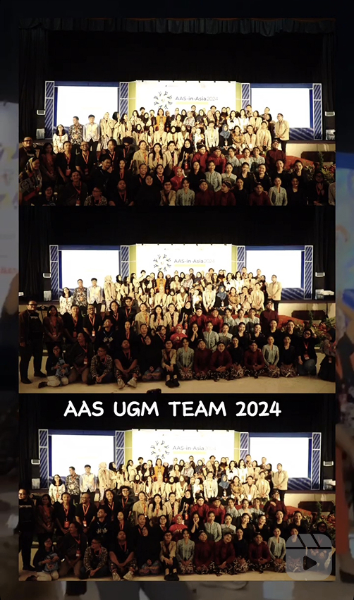
kbm.ugm
AAS in Asia, UGM Yogyakarta sudah selesai. Tahukah kamu persiapan AAS ini sudah berjalan lama? Sejak 2022 tim UGM sudah memulai dan pada 2023 tim UGM mempersiapkannya secara intensif.
Tentu apresiasi kami yang sebesar-besarnya pada tim UGM. Juga rasa terima kasih yang tak terhingga pada seluruh peserta dan narasumber yang bersedia berbagi pengetahuan dalam rangkaian konferensi ini.
Ada secuplik foto dan video yang menceritakan bagaimana berbagai civitas di UGM dengan berbagai latar belakang bertemu dan bekerja sama demi mewujudkan konferensi ini.
Rapat, persiapan, koordinasi, periksa sana-sini..
selamat UGM.. atas terlaksananya konferensi akademik yang sangat berkesan di hati.
Sampai jumpa di kegiatan selanjutnya!
Contributor: @ara.adisti
#AASinAsia #AASUGM #AAS2024
📷📽️:berbagai sumber
Music Credit
Judul: Tujuh Belas
Penyanyi: @tulusm
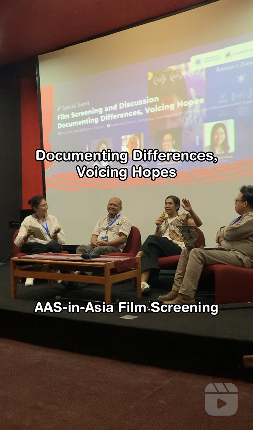
kbm.ugm
In the AAS in Asia UGM Yogyakarta Conference, we hosted another film screening event under the theme "Documenting Differences, Voicing Hopes". This event took place on July 11, 2024, featuring the animated film "Annah la Javanaise" and the documentary film "Someday". It drew a large audience, and the ensuing discussion was quite captivating. Let's hear what the speakers had to say about the films screened!
Contributor: @asminurais
📷 @lborneva @mkhmmdaziz
#AASinAsia #AASUGM #AAS2024
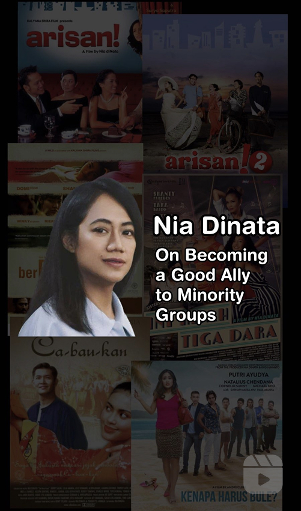
kbm.ugm
We greatly admire how @ibunia encourages us to become more sensitive, more humane, to move towards more inclusive relationships, and also together build the space of representation for the minority subjects and their thoughts. Ibu Nia has started through her films and production house. The KBM team had the valuable opportunity to listen to her thoughts.
Let's hear together!
Contributor: @asminurais
📷 @mkhmmdaziz @lborneva
#AASinAsia2024 #AASUGM #AAS2024
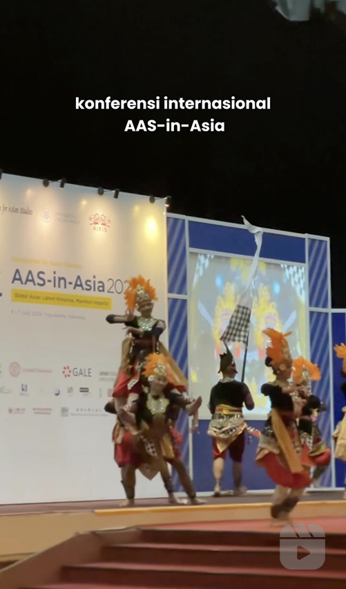
ugm.yogyakarta
Sebagai universitas pusat kebudayaan, UGM mempromosikan ragam budaya Indonesia di acara AAS-in-Asia 2024 yang telah sukses dilaksanakan 9-11 Juli 2024 silam. Salah satunya yaitu penampilan memukau sebuah karya tari "Lintas Negeriku" dengan Koreografer: Tri Anggoro, S.Sn., Penata Musik: Boedhie Pramono, dan Penata Busana: Anisa Pratiwi, S.Pd.
Tarian tersebut menjadi simbol beragamnya kebudayaan di Indonesia. Dan benar, itu menjadi perhatian lebih oleh para peserta AAS in Asia. Setelah tampil, banyak sekali kawan dari berbagai negara yang mengajak berfoto bersama para penari dari @bso.sasoebah.
Wah jadi makin bangga dong, Kawan UGM! 🤩🫶🏻
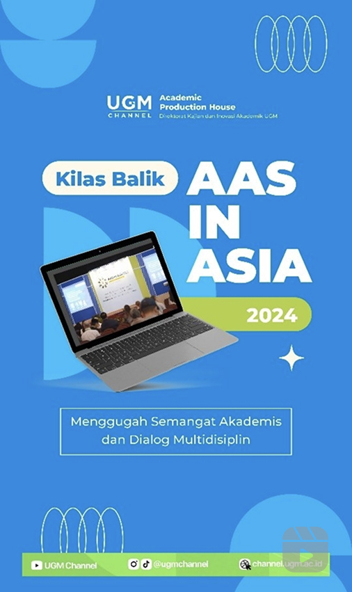
ugmchannel and penelitian.ugm
Hai, Sobat UGM Channel 👋✨
Pada tanggal 9 hingga 11 Juli lalu, UGM berkesempatan menjadi tuan rumah konferensi internasional AAS-in-Asia, loh! Konferensi ini dihadiri oleh ribuan akademisi dari 43 negara. Wah, hebat sekali, bukan? Konferensi tersebut tentunya berhasil membangkitkan semangat akademis dan membangun dialog antar multidisiplin. 🔥
Yuk, simak video Kilas Balik AAS-in-Asia 2024 yang berhasil MinChan tangkap 🤩! Oiya, akan mini podcast dari peserta AAS-in-Asia yang MinChan unggah di YouTube UGM Channel juga, loh! So, stay tuned & follow instagram UGM Channel serta subscribe YouTube UGM Channel untuk mendapatkan notifikasi konten terbaru UGM Channel, ya! 🫵😁❤️
________________
UGM Channel
Direktorat Kajian dan Inovasi Akademik UGM
YouTube: UGM Channel
Instagram: @ugmchannel
TikTok: @ugmchannel
#aasinasia2024 #ugm #universitasgadjahmada #conference #research